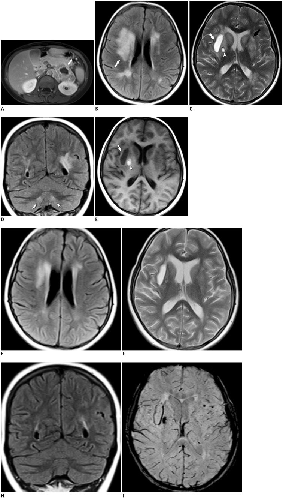
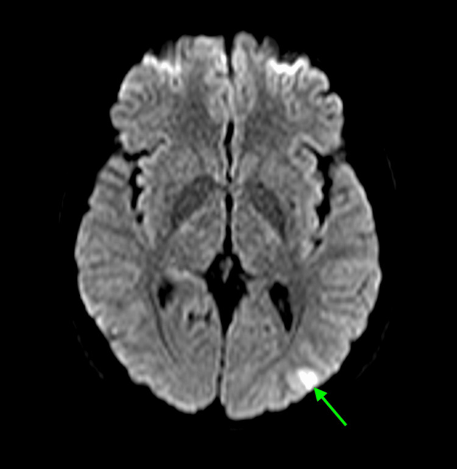
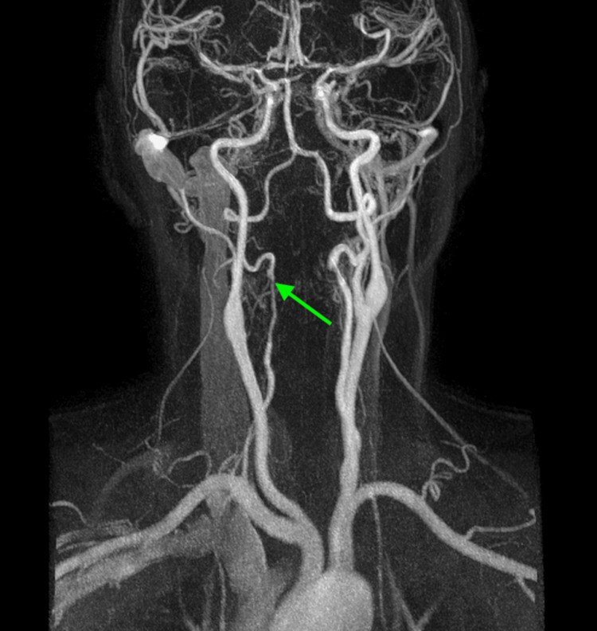
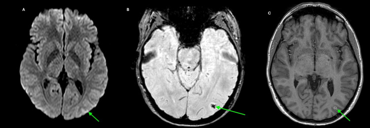
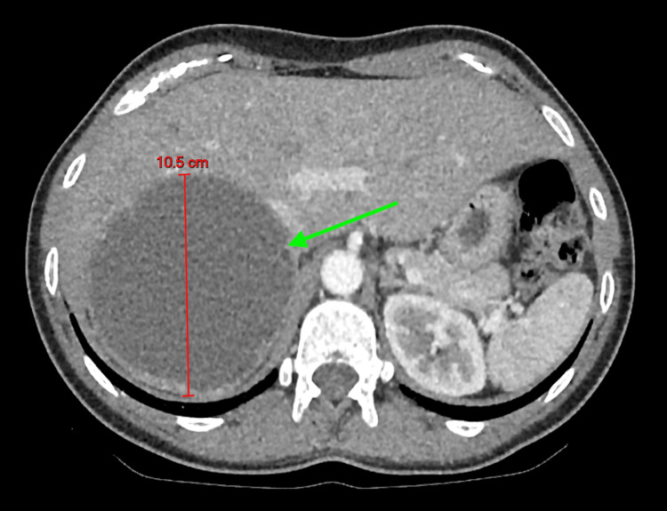
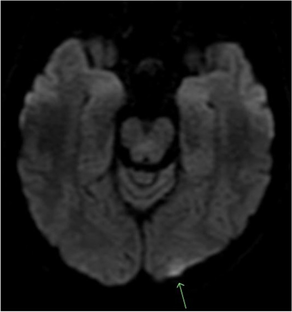

184 — Biến chứng thần kinh của u tủy thượng thận – u cận hạch (PPGL): PRES, RCVS, đột quỵ & xuất huyết não / Neurological complications of phaeochromocytoma–paraganglioma
Tags: pattern:phu-nao-mach pattern:co-mach-nao pattern:xuat-huyet-nao vung:nao vung:thuong-than protocol:MRI-DWI-SWI-MRA score:PRES incidentaloma:u-thuong-than
Mức chắc chắn (certainty): tổng hợp y văn (literature synthesis) — ghép 3 ca nguyên văn có ảnh (PMC3772271, PMC12794468, PMC9380330) với phần bàn luận về thời điểm mổ sau đột quỵ (PMC11969262) và các ngưỡng đã có trong repo (155, 167, 177).
Câu chốt: Bệnh nhân đau đầu dữ dội từng cơn + huyết áp dao động thì hình ảnh não chỉ là hệ quả — chẩn đoán nằm ở metanephrine và một khối thượng thận. Ngược lại, khi đã biết có PPGL mà xuất hiện đau đầu, co giật, mù vỏ não hay liệt nửa người, đừng mặc định "đột quỵ do xơ vữa": ba bệnh cảnh của catecholamine là PRES (phù mạch, hồi phục), RCVS (co mạch, hồi phục ~3 tháng) và nhồi máu/xuất huyết (không hồi phục) — ba bệnh cảnh này đổi hoàn toàn thái độ điều trị và thời điểm mổ.
1. Tổng quan — catecholamine làm hỏng não theo 4 đường
- Đường 1 — vỡ tự điều hòa → phù mạch (PRES). Tiểu động mạch não tự điều hòa theo cơ chế Bayliss: khi huyết áp vượt ngưỡng trên, mạch không co thêm được nữa → tăng áp lực mao mạch, phá vỡ hàng rào máu–não, thoát huyết tương ra khoang ngoại bào. Vì là nước ngoại bào, T2/FLAIR sáng, nhưng DWI không hạn chế khuếch tán và ADC cao — đây là điểm phân biệt cốt lõi với nhồi máu (ADC thấp). Phù mạch hồi phục khi hạ áp lực tưới máu.
- Đường 2 — co mạch từng đoạn (RCVS). Catecholamine kích thích alpha-1 gây co mạch não; kèm rối loạn chức năng nội mô do stress oxy hóa. Mạch co – giãn không đều tạo hình "chuỗi hạt" (string of beads), tự hết trong ~3 tháng; trong giai đoạn co mạch có thể gây nhồi máu vùng phân thủy (watershed) vì lưu lượng thấp nhất ở vùng tiếp giáp tưới máu.
- Đường 3 — xuất huyết. Tăng áp lực đột ngột trên nền vi mạch đã hyalin hóa do tăng huyết áp mạn → vỡ mạch nhỏ (nhân bèo, đồi thị, thùy) và vi chảy máu rải rác. Huyết sắc tố (hemosiderin) gây mất tín hiệu trên SWI/T2* — chỉ thấy khi chủ động chụp chuỗi này.
- Đường 4 — vi mạch huyết khối (TMA). Tăng huyết áp ác tính (≥ 180/120 mmHg + tổn thương cơ quan đích) làm tổn thương nội mô → tan máu vi mạch (schistocyte, LDH tăng, hemoglobin tụt) và tắc vi mạch não–thận, giải thích vì sao bệnh nhân vừa mù vỏ não vừa suy thận.
Ngưỡng & số liệu định lượng:
- PPGL gây 0,5–2,0% các ca tăng huyết áp ở trẻ em (PMC3772271).
- Trong một loạt tử thiết, 75% bệnh nhân PPGL tử vong được phát hiện tình cờ chết vì nhồi máu cơ tim hoặc tai biến mạch máu não (Sutton, dẫn lại trong PMC9380330).
- PRES thể "trung tâm" (central PRES): thân não 18,4%, nhân bèo/đuôi 11,8% (McKinney, dẫn trong PMC3772271) — nghĩa là thiểu số nhưng không hiếm, và chính nhóm này dễ bị đọc nhầm.
- Hạ huyết áp trong PRES: giảm 20–30% huyết áp trong vài giờ đầu, không hạ nhanh hơn (PMC9380330) — hạ quá tay làm giảm tưới máu vùng co mạch.
- Sinh hóa của ca RCVS: normetanephrine 11.652 pmol/L (bình thường < 1.180), metanephrine 5.627 pmol/L (< 510) (PMC12794468).
- Ca trẻ 13 tuổi (PMC3772271): huyết áp 215/165 mmHg, mạch 137 lần/phút, normetanephrine niệu 30.084 µg/24 giờ (63–402), noradrenalin huyết tương 17.540 pg/mL (0–400).
- Hậu quả huyết học của THA ác tính: hemoglobin tụt từ > 15 g/dL xuống 9,6 g/dL trong 72 giờ, schistocyte 3+, troponin 0,35 → 3,2 ng/mL (PMC9380330).
- Thời điểm mổ sau đột quỵ (quan trọng nhất cho quyết định): ít nhất 6 tuần hồi phục sau đột quỵ và ≥ 2 tuần đạt hạ huyết áp tư thế trước mổ; ca được báo cáo cần 9 tuần alpha-block và vẫn có 6 cơn tăng huyết áp nặng trong mổ (PMC11969262). Chuẩn bị alpha-block thường quy 7–14 ngày (bài
177).
2. Mẫu hình + chẩn đoán phân biệt theo bệnh cảnh (gamut)
- A — Đau đầu sét đánh (thunderclap) tái diễn, CT não lần đầu bình thường: nghĩ RCVS (± PRES). Đây là cửa vào hay bị dán nhãn "migraine/cluster" — và triptan làm co mạch nặng thêm (PMC12794468).
- B — Bệnh não + co giật + mù vỏ não hai bên: nghĩ PRES. Điển hình là phù chẩm–đỉnh; thể trung tâm (hạch nền, thân não, đồi thị, chất trắng quanh não thất) gặp ở tăng huyết áp mạn và tiên lượng nặng hơn.
- C — Khiếm khuyết khu trú (liệt nửa người, thất ngôn): nghĩ nhồi máu — vùng phân thủy do co mạch/tụt áp lực, hoặc thuyên tắc. Ở người trẻ không yếu tố nguy cơ xơ vữa, phải tìm nguyên nhân nội tiết.
- D — Hôn mê, đau đầu dữ dội, nôn: nghĩ xuất huyết não (nhân bèo/đồi thị/thùy) hoặc xuất huyết dưới nhện; đây là nhóm tử vong cao nhất nếu bỏ sót.
- E — Thiếu máu + vàng da nhẹ + suy thận cấp + mù vỏ não: nghĩ THA ác tính + TMA phối hợp PRES — cần phân biệt với TTP/HUS thật (ADAMTS13) vì hướng điều trị khác.
- F — Bắt chước (mimic): đau nửa đầu có aura, viêm mạch nguyên phát CNS, loạn sản cơ xơ (FMD) và loạn sản động mạch từng đoạn (SAM), PRES do thuốc/urê huyết, hạ đường huyết.
- Gợi nhớ 4 nhóm mạch máu não của catecholamine: P–R–I–H — PRES (phù), RCVS (co mạch), Infarct (nhồi máu), Hemorrhage (xuất huyết). Bốn nhóm có thể cùng tồn tại trên một bệnh nhân.

(A) MRI bụng có cản quang: khối thượng thận trái lớn, ngấm không đồng nhất, hoại tử trung tâm. (B–E) Trước điều trị: FLAIR/T2 tăng tín hiệu đối xứng ở nhân đuôi, nhân bèo, nhân răng và chất trắng quanh não thất; kèm 2 ổ máu tụ (ổ mạn có viền hemosiderin ở bao ngoài phải, ổ bán cấp ở nhân cầu nhạt phải). (F–H) Ngày thứ 10 sau hạ huyết áp: phù mạch giảm rõ/hoàn toàn. (I) SWI: nhiều ổ mất tín hiệu milimét ở hạch nền — chỉ thấy trên SWI. Nguồn: Serter A et al., Korean J Radiol 2013 (PMC3772271), CC BY-NC 3.0, giữ nguyên bản.3. Bảng so sánh phân biệt (ma trận đối chiếu)
| Thực thể (entity) | Hình ảnh điển hình | Chốt vào (rule-in) | Chốt loại (rule-out) | Gợi ý xác nhận |
|---|---|---|---|---|
| PRES điển hình | Phù vỏ–dưới vỏ chẩm–đỉnh hai bên, đối xứng; T2/FLAIR sáng, DWI âm/ADC cao | Phù mạch + huyết áp rất cao + hồi phục sau hạ áp lực | ADC thấp + tăng tín hiệu theo lãnh thổ mạch → nhồi máu, không phải PRES | MRI DWI/ADC + FLAIR; chụp lại sau 7–10 ngày |
| PRES trung tâm | Phù hạch nền, đồi thị, thân não, nhân răng, chất trắng quanh não thất; có thể không có phù chẩm–đỉnh | Phù đối xứng ở hạch nền/thân não ở người THA mạn | Tổn thương một bên, bờ rõ, ngấm kiểu u → u/viêm | FLAIR + T2, so sánh hai bên, bối cảnh THA kéo dài |
| RCVS | MRA/CTA/DSA: co thắt từng đoạn nhiều mạch ("chuỗi hạt"), có thể kèm nhồi máu phân thủy nhỏ | Đau đầu sét đánh lặp lại + co mạch từng đoạn + hồi phục ≤ 3 tháng | Co mạch cố định, một đoạn dài, không hồi phục → xơ vữa/FMD/viêm mạch | MRA lúc cơn + lặp sau 2–4 tuần; DSA khi còn nghi |
| Nhồi máu vùng phân thủy | Ổ hình nêm ở vùng tiếp giáp (bán cầu–bán cầu, trên/dưới lều), DWI sáng + ADC thấp | ADC thấp + hình nêm + huyết áp dao động | ADC cao, không theo lãnh thổ → phù mạch (PRES) | DWI/ADC; siêu âm tim/tầm soát nguồn tắc |
| Xuất huyết não do THA | Ổ máu tụ nhân bèo/đồi thị/thùy, viền hemosiderin; SWI mất tín hiệu mạnh | SWI/T2* mất tín hiệu + huyết áp ≥ 180/120 | Không mất tín hiệu, chỉ phù → không phải máu | CT không cản quang cấp + SWI |
| Viêm mạch nguyên phát CNS | Hẹp–giãn nhiều ổ, nhiều mạch, ngấm thành mạch trên HR-vwMRI, tổn thương não không hồi phục | Ngấm thành mạch đồng tâm + tổn thương não tiến triển | Hồi phục nhanh sau hạ áp + co mạch tự hết → RCVS | HR-vwMRI, sinh thiết não–màng não (bài 241, 242) |
| FMD/SAM mạch cổ–não | "Chuỗi hạt" nhưng thường ở ĐM cảnh/đốt sống đoạn ngoài sọ, ± phình/bóc tách | Tổn thương cố định, không hồi phục, ± bóc tách | Co mạch hồi phục sau vài tuần → RCVS | CTA cổ–não, DSA, tầm soát mạch thận |
4. Protocol chụp + phân độ + quyết định điều trị
4.1. Chụp não (làm ngay, đừng chờ metanephrine):
- MRI là chuẩn: DWI + ADC, FLAIR, T2, SWI/T2*, TOF-MRA (hoặc CTA nếu không chụp MRI được) — tối thiểu 4 chuỗi này, vì mỗi chuỗi trả lời một câu khác nhau (phù? nhồi máu? máu? co mạch?).
- CT không cản quang chỉ để loại trừ chảy máu cấp; CT thường âm tính không loại trừ PRES/RCVS (cả 3 ca nguồn đều có CT đầu bình thường).
- Chụp lại 7–10 ngày (ca PMC3772271 chụp ngày 10): phù mạch giảm là bằng chứng vàng của PRES; đồng thời lộ vi chảy máu trên SWI mà lần đầu bỏ sót.
- MRA lặp sau 2–4 tuần nếu nghi RCVS: co mạch hồi phục mới là chốt; "chuỗi hạt" có thể vắng mặt ở lần chụp đầu (đúng như ca PMC12794468).
4.2. Chụp thượng thận & xét nghiệm:
- Metanephrine huyết tương/niệu trước mọi can thiệp (sinh thiết, nút mạch, mổ) — can thiệp khi chưa chặn alpha có thể gây cơn THA/ngừng tim.
- CT bụng 3 thì + washout (bài
155): PPGL thường > 110–120 HU ở thì động mạch, nhưng có thể thải ≥ 60% giả adenoma — thải thuốc không loại trừ pheo. - MRI bụng khi cần đánh giá xâm lấn/huyết khối; MIBG hoặc DOTATATE PET khi tìm u ngoài thượng thận/di căn (bài
168,177).
4.3. Phân độ PRES (McKinney — dùng để quyết định mức theo dõi):
| Độ | Định nghĩa hình ảnh | Ý nghĩa thực hành |
|---|---|---|
| Nhẹ | Phù vỏ–dưới vỏ, không xuất huyết, không hiệu ứng khối, ít/không lan tiểu não–thân não–hạch nền | Hạ huyết áp + theo dõi, hồi phục cao |
| Vừa | Phù liên tục từ vỏ tới chất trắng sâu nhưng chưa tới sát não thất, hoặc tổn thương 2 nhóm trong (tiểu não/thân não/hạch nền); có thể có xuất huyết nhu mô nhẹ | Nhập ICU, theo dõi tri giác, tránh hạ áp quá nhanh |
| Nặng | Phù liên tục tới sát não thất, hoặc xuất huyết có hiệu ứng khối/lệch đường giữa/thoát vị; hoặc tổn thương cả 3 nhóm | Nguy cơ thoát vị, hội chẩn thần kinh – hồi sức |
4.4. Điều trị — 5 nguyên tắc:
- Hạ huyết áp có kiểm soát: giảm 20–30% trong vài giờ đầu, rồi hạ dần; thuốc giãn mạch tác dụng ngắn (nicardipine, clevidipine) dễ chuẩn độ hơn.
- Alpha-block trước, beta sau — không bao giờ chẹn beta đơn thuần (bài
177); nếu bệnh nhân đang dùng beta-block đơn thuần thì ngừng và chuyển sang alpha-block (đúng như ca PMC9380330). - Kiểm soát co giật bằng thuốc chống động kinh khi có cơn; không dùng triptan khi nghi RCVS.
- Mổ cắt u là điều trị triệt căn, nhưng thời điểm phải sau khi não ổn định: ≥ 6 tuần sau đột quỵ + ≥ 2 tuần đạt hạ huyết áp tư thế trước mổ (PMC11969262); với PRES/RCVS đơn thuần, nhiều trung tâm mổ sau 2–4 tuần khi hết phù — chưa có đồng thuận, ghi rõ "chưa rõ — cần tra".
- Theo dõi huyết áp xâm lấn trong mổ vì nguy cơ cơn THA khi chạm u và tụt áp sau thắt tĩnh mạch thượng thận.
flowchart TD
A[Đau đầu / co giật / thiếu hụt thần kinh + THA dao động] --> B[CT não không cản quang]
B --> C{MRI não: DWI-ADC + FLAIR + SWI + MRA}
C -->|Phù mạch, ADC cao, hồi phục| D[PRES]
C -->|Co mạch từng đoạn, hồi phục| E[RCVS]
C -->|ADC thấp, hình nêm| F[Nhồi máu phân thủy]
C -->|SWI mất tín hiệu + máu tụ| G[Xuất huyết não]
D --> H[Metanephrine + CT bụng 3 thì]
E --> H
F --> H
G --> H
H -->|Metanephrine tăng + khối thượng thận| I[PPGL xác định]
I --> J[Alpha-block 7-14 ngày, đích < 130/80]
J --> K{Có đột quỵ hoặc xuất huyết?}
K -->|Có| L[Chờ >= 6 tuần hồi phục + >= 2 tuần hạ HA tư thế]
K -->|Không| M[Mổ sau khi hết phù / hết co mạch]
L --> N[Cắt u, theo dõi HA xâm lấn]
M --> N
5. Biến thể bình thường và cạm bẫy
- "Sáng trên DWI" không đồng nghĩa nhồi máu. Phù mạch của PRES có thể sáng nhẹ trên DWI do hiệu ứng T2 shine-through; phải xem ADC — ADC cao = phù mạch (hồi phục), ADC thấp = độc tế bào/nhồi máu (di chứng).
- PRES không nhất thiết ở vùng chẩm–đỉnh. Thể trung tâm (hạch nền/thân não) gặp tới 18,4% ở thân não; đừng loại trừ chỉ vì "không đúng vị trí kinh điển".
- SWI là chuỗi bị bỏ quên nhất. Vi chảy máu không thấy trên FLAIR/T2/CT; nếu không chụp SWI sẽ kết luận "PRES lành tính" trong khi đã có tổn thương không hồi phục.
- RCVS có thể không có "chuỗi hạt" ở lần chụp đầu, và MRA độ phân giải thấp dễ âm tính giả; nghi ngờ cao → DSA.
- Đừng chọc dò dịch não tủy khi huyết áp chưa kiểm soát (nguy cơ cơn THA, thoát vị); nếu đã chọc, kết quả Protein tăng nhẹ không đặc hiệu.
- Bẫy "migraine/cluster": đau đầu từng cơn ở người trẻ được điều trị nhiều tháng bằng triptan — triptan làm co mạch nặng thêm; hỏi huyết áp mỗi lần khám.
- Bẫy "đã cắt pheo là hết chuyện": ca PMC3772271 tái phát sau 7 năm không theo dõi; huyết áp 215/165 khi nhập viện.
- Satisfaction of search: thấy ổ nhồi máu trên MRI là dừng, bỏ qua khối thượng thận — vì thế mọi đột quỵ ở người < 40 tuổi không yếu tố nguy cơ nên có một câu hỏi về cơn THA/đánh trống ngực.
6. Tự lượng giá — Blind Quiz
Ca 1 — Nữ 13 tuổi, đau đầu dữ dội + vã mồ hôi, huyết áp 215/165 mmHg. Tiền sử cắt u thượng thận phải 7 năm trước, bỏ theo dõi. Nhìn FLAIR trước, mô tả tổn thương.
- Gợi ý: tổn thương đối xứng, ở hạch nền và nhân răng, không ở vùng chẩm–đỉnh.
- Câu hỏi: (1) Mô tả 2 kiểu tổn thương trên FLAIR/T2. (2) Vì sao đây là PRES trung tâm mà không phải nhồi máu? (3) Chuỗi nào phát hiện thêm tổn thương và tổn thương đó có hồi phục không?
Bấm để hiện đáp án (findings + chẩn đoán)
- Dấu hiệu: FLAIR/T2 tăng tín hiệu đối xứng ở nhân đuôi, nhân bèo, nhân răng và chất trắng quanh não thất; thêm 2 ổ máu tụ (ổ mạn có viền hemosiderin ở bao ngoài phải; ổ bán cấp ở nhân cầu nhạt phải). Ngày 10 sau hạ huyết áp: phù giảm gần hoàn toàn; SWI lộ nhiều ổ mất tín hiệu milimét ở hạch nền/thân não.
- Chẩn đoán: PRES trung tâm (độ nặng) do pheochromocytoma tái phát, kèm vi xuất huyết — phù mạch hồi phục, xuất huyết không hồi phục.
- Vì sao không phải nhồi máu: phân bố đối xứng, không theo lãnh thổ động mạch, và hồi phục sau hạ áp = phù mạch ngoại bào.
- Nguồn ảnh: Serter A et al., Korean J Radiol 2013;14:849 (PMC3772271), CC BY-NC 3.0, giữ nguyên bản.
Ca 2 — Nữ 35 tuổi, đau đầu sét đánh tái diễn 1 tuần, sau đó thất ngôn + nhìn mờ. CT não 2 lần bình thường. Xem DWI và MRA.


- Câu hỏi: (1) Ổ trên DWI gợi ý gì, và nó có thực sự là nhồi máu? (2) MRA mô tả tổn thương gì, ở đoạn nào? (3) Chẩn đoán thống nhất cho đau đầu + tổn thương mạch + ổ não?
Bấm để hiện đáp án (findings + chẩn đoán)
- Dấu hiệu: DWI tăng tín hiệu vỏ chẩm–đỉnh trái (ban đầu bị đọc là nhồi máu hoặc thay đổi do co giật). MRA: dòng chảy không đều, co thắt từng đoạn ở đoạn V2 động mạch đốt sống phải, tái thông phía dưới.
- Diễn tiến: sau 2 tuần, ổ DWI gần như mất, nhưng SWI còn artifact xu hướng (hemosiderin) và T1 sau tiêm có ngấm vỏ → ổ xuất huyết vỏ nhỏ, không phải nhồi máu lớn. MRA còn bất thường nhưng giảm.

- Chẩn đoán: RCVS do pheochromocytoma (khối thượng thận phải 10,5 cm, normetanephrine 11.652 pmol/L). Đau đầu sét đánh + co mạch từng đoạn + hồi phục = bộ ba của RCVS.
- Bài học: "chuỗi hạt" không bắt buộc phải có; co mạch một đoạn ở ĐM đốt sống vẫn đủ gợi ý khi lâm sàng điển hình.
- Nguồn ảnh: Philip K et al., Cureus 2025 (PMC12794468), CC BY 4.0.

- Khối 10,5 cm, có thành phần dịch/HU > 10, đẩy lệch thận phải và ấn gan — hình ảnh pheo thể nang thoái hóa, không điển hình nhưng vẫn là ổ catecholamine.
Ca 3 — Nữ 27 tuổi (ca trong y văn), mù vỏ não hai bên + huyết áp 219/124 mmHg, hemoglobin tụt nhanh từ 15 xuống 9,6 g/dL trong 72 giờ. Xem DWI.

- Câu hỏi: (1) Vì sao đây là tổn thương vùng phân thủy chứ không phải một lãnh thổ mạch? (2) Cơ chế mù vỏ não? (3) Xét nghiệm máu nào giải thích đồng thời thiếu máu + suy thận?
Bấm để hiện đáp án (findings + chẩn đoán)
- Dấu hiệu: ổ tăng tín hiệu vỏ chẩm trái ở vùng phân thủy, kèm nhiều ổ dưới vỏ hai bên (trái > phải); hình thái không theo một lãnh thổ động mạch.
- Chẩn đoán: tổn thương thiếu máu não do THA ác tính, có thành phần PRES (mù vỏ não hai bên) và TMA do THA ác tính (schistocyte 3+, hemoglobin 15 → 9,6 g/dL/72 giờ, LDH tăng, tiểu cầu giảm) — không phải TTP nguyên phát.
- Vì sao mù vỏ não: tổn thương vỏ chẩm hai bên (trung tâm thị giác) — bệnh nhân mù nhưng đồng tử và đáy mắt bình thường.
- Điều trị: ngừng beta-block đơn thuần, phenoxybenzamine chuẩn độ tới 60 mg × 2/ngày, hạ huyết áp có kiểm soát; sau mổ thị lực hồi phục dần và hết thiếu máu tan máu.
- Nguồn ảnh: Patel SP et al., BMC Endocr Disord 2022 (PMC9380330), CC BY 4.0, giữ nguyên bản.
Bài liên quan chéo
- 100 – Tổng quan hệ Bụng
- 155 – Thượng thận tình cờ: 10 HU & washout
- 167 – Biến chứng tim mạch của pheochromocytoma
- 168 – U tủy thượng thận & u cận hạch
- 169 – PPGL ở trẻ em & trong thai kỳ
- 177 – Điều trị & theo dõi PPGL
- 241 – Đọc HR-vwMRI thành mạch: viêm mạch vs RCVS
- 653 – PRES & RCVS ở trẻ em
Ảnh
- Tên file:
184_ppgl-<nội dung>_<chuỗi xung>_<PMCID>.jpg; nguồn + giấy phép từng ảnh trongimages/CREDITS.md. - Không tải ảnh từ Radiopaedia/AuntMinnie; chỉ dẫn link trong
sources.md.
Không dùng để chẩn đoán độc lập khi chưa có người hướng dẫn.